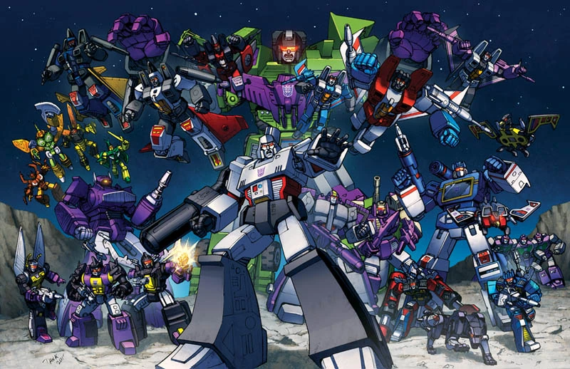
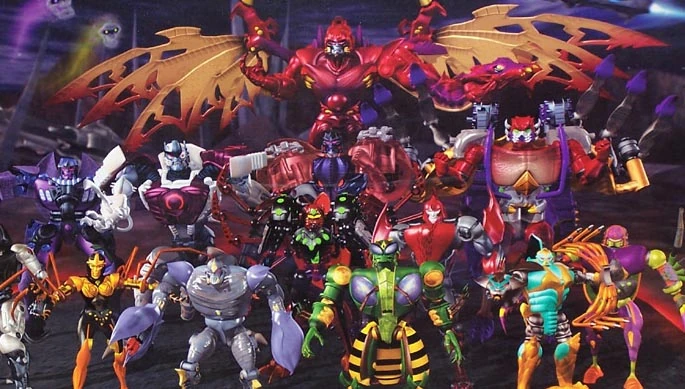
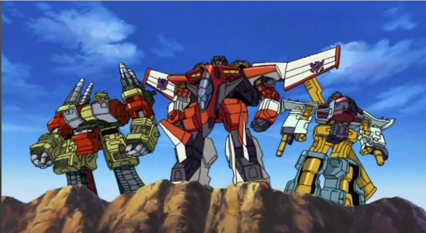
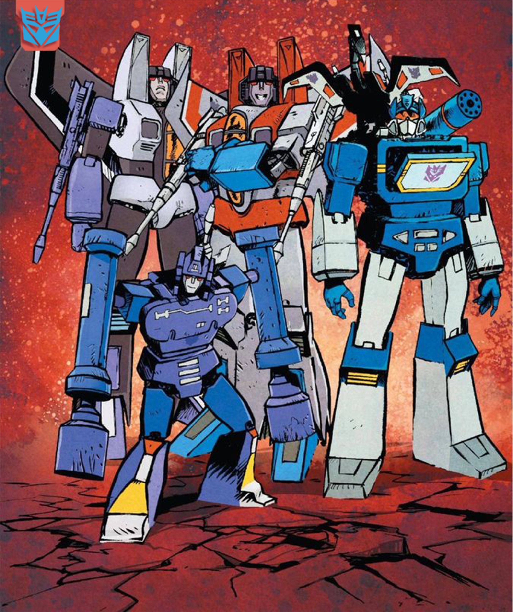
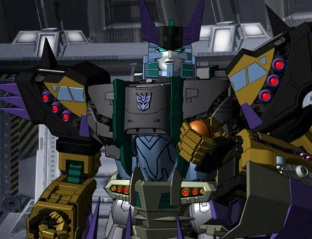
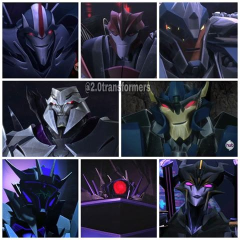
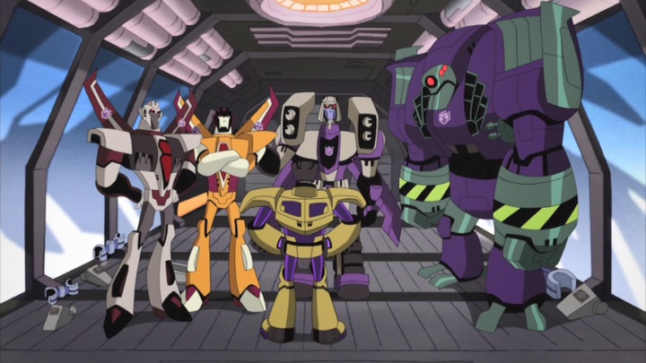
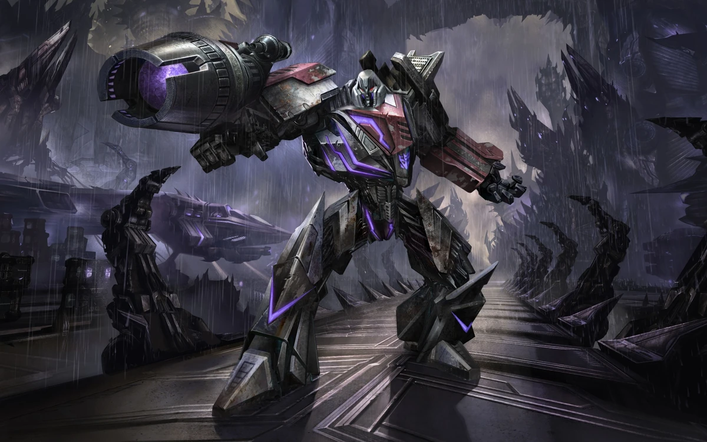

Decepticons
The Decepticons are the antagonistic faction of Transformers, led by the ruthless Megatron, who seek to conquer Cybertron and the universe through brute force, powerful weaponry, and amassing large quantities of energon. They will stop at nothing to gain control and prevent the Autobots from disrupting their efforts in domination.
Decepticons Through the Series
Generation 1

In the original Transformers series, the Autobots crash-landed on Earth millions of years ago and awakened in 1984. Their mission was to protect Earth and humanity from the Decepticons while seeking energon to eventually return to and restore their home planet of Cybertron. The series featured classic animation and became the foundation for the entire franchise.
Main Decepticons: Megatron, Starscream, Soundwave, Shockwave, Skywarp, Thundercracker, Ramjet, Dirge, Thrust, Frenzy, Rumble, Laserbeak, Ravage, Spectro, Spyglass, and Viewfinder.
Beast Wars

Beast Wars introduced the Maximals, descendants of the Autobots, who crashed on a prehistoric planet rich in raw energon. To survive the planet's energon radiation, they adopted beast modes based on Earth animals. Their mission was to stop the Predacons from altering history and changing the fate of Cybertron. This series pioneered full CGI animation for the franchise.
Main Predacons: Megatron, Scorponok, Tarantulas, Terrorsaur, Waspinator, and Inferno.
Armada

In Transformers Armada, the Autobots' mission centered on protecting the Mini-Cons, a race of smaller Transformers with the ability to power-link and greatly enhance larger Transformers. The Autobots worked to prevent the Decepticons from using Mini-Cons as weapons of conquest. The series featured cel-shaded animation and partnerships between human children and the Autobots.
Main Decepticons: Megatron, Starscream, Demolishor, Cyclonus, Thrust, and Tidal Wave.
Energon

Set ten years after Armada, Transformers Energon showed the Autobots working alongside humans to mine energon and rebuild Cybertron. When Megatron returned as Galvatron with an army of Terrorcons, the Autobots defended Earth and its energon resources while working to complete Cybertron's restoration. The series continued the cel-shaded animation style.
Main Decepticons: Megatron, Starscream, Soundwave, Shockwave, Cyclonus, Demolishor, Blackout, and Bonecrusher.
Cybertron

Transformers Cybertron saw the Autobots race across the galaxy to locate the Cyber Planet Keys, ancient artifacts needed to close a massive black hole threatening to consume the universe. Their journey took them to multiple colony worlds including Earth, Velocitron, Jungle Planet, and Gigantion. The series featured dynamic action sequences and planetary adventures.
Main Decepticons: Megatron, Starscream, Soundwave, Shockwave, Lugnut, Sharpshot, Kickback, and Bruticus Maximus.
Prime

Transformers Prime featured a small team of Autobots operating covertly on Earth as the last survivors of the war for Cybertron. Partnering with three human teenagers, they defended Earth from Megatron's attempts to conquer the planet and harness dark energon. The series was praised for its cinematic CGI animation and mature storytelling.
Main Decepticons: Megatron, Starscream, Soundwave, Shockwave, Airachnid, Knock Out, and Breakdown.
Animated

Transformers Animated reimagined the franchise with a unique, stylized art direction. It followed a young maintenance crew of Autobots who accidentally discovered the legendary AllSpark and became Earth's unlikely protectors. Set in futuristic Detroit, the series blended superhero elements with classic Transformers action.
Main Decepticons: Megatron, Lugnut, Lockdown, Soundwave, Starscream, Schockwave, and Blackarachnia.
War for Cybertron Trilogy

The War for Cybertron Trilogy on Netflix depicted the final days of the Great War on Cybertron. The Autobots, led by Optimus Prime, fought desperately to secure the AllSpark and evacuate their dying world before it was consumed entirely. The series featured gritty, realistic CGI animation and explored the difficult moral choices of wartime. It concluded with the Autobots' journey to Earth.
Main Decepticons: Megatron, Starscream, Shockwave, Soundwave, Thundercracher, Skywarp, Dirge, and Ramjet.